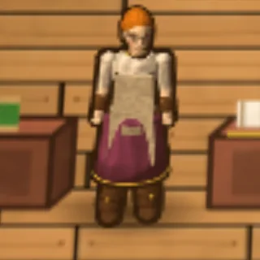
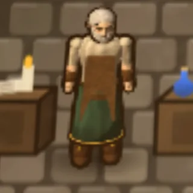
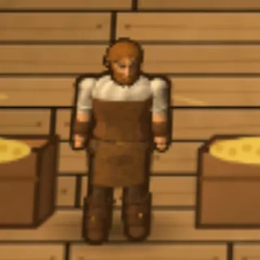
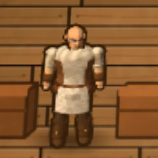
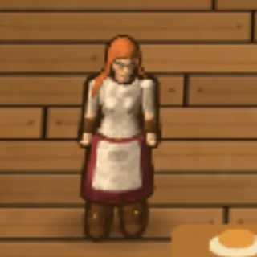

Chapter 12 of 12
People of Aethelgard
Everyone in town has a past. Return what they lost and they will follow you into the dark.
Companions and keepsakes
Every townsperson from the first group lost something before you arrived. These keepsakes turn up very rarely in boss loot and treasure chests, and some are more likely from particular foes, such as Sister Elara’s prayer beads from the undead. The item’s description hints at its owner. Bring it to them and they will join you as a companion.
- Only one companion follows you at a time. Talk to them to send them home, and visit them at home to bring them along again.
- Companions grow from the fights you share, up to level 10. Each level makes them hit harder and faster.
- Murdering anyone in town turns every companion away from you forever.
- Companions are people. They are separate from tamed animals, and you can have a companion and a pet at once (see Animals & Taming).
The town square

Pip the Urchin
Pip. Orphan, sort of. I sweep the square for coppers and watch heroes come and go.
Pip was left as a baby by the fountain with a locket around his neck, which was stolen during his first winter. He is full of advice about selling orc ears and not dying.
Keepsake: Tarnished Locket
A dented brass locket with a faded portrait of a smiling woman holding a baby. As a companion, Pip sneaks up on monsters and steals from them, then slips the loot into your hand.
That’s my mum… I’m coming with you. I’m small. They won’t even see me. And I’ll nick better things off them than whatever they drop when they die.

Old Wynn
Old Wynn. Sixty years telling tales of this isle. Some are even true.
The town’s storyteller knows the history of every lair and hero. He lost his life’s work, a chronicle of forty years of tales, the night orcs raided the road.
Keepsake: Water-stained Chronicle
A thick hand-bound book of tales. Wynn does not fight, but ask him for a story and he will tell you about Gnarlfang’s bullied youth, the priest who became Lich Morthal, the day Mick robbed the royal vault and gave it all back, and more.
I’m too old to fight, but not to walk. Let me come along. I’ll tell you the tales as we go, and write yours down while I’m at it.
Shop, temple and forge

Mara the Merchant
Mara. I hauled spice caravans until orcs took my wagon. Now I sell to those brave enough to take the road back.
Mara buys every scrap you bring and sells the gear, potions and tools you need.
Keepsake: Scorched Caravan Bell
A painted brass wagon bell stamped with a spice merchant’s mark. She fights from range with a sling and throws you a healing draught when you are badly hurt.
My lead wagon’s bell! I’d know that ring in my sleep… The shop can mind itself while I’m out. I still remember how to use one of these. Shall we?

Brother Aldric
Brother Aldric. I once carried a sword. Now I carry only prayers.
A former knight who took holy vows the same week the Warlord’s first raid came. He heals, blesses and accepts donations.
Keepsake: Knight’s Oathblade
A plain, well-kept longsword whose pommel oath has been scratched out. He fights in melee and his prayers mend your wounds.
I buried that blade beneath a cairn the day I took my vows… Perhaps the Light returns it for a reason. I will walk with you and mend what the dark breaks. And if I must, I will lift this again.

Sister Elara
Sister Elara. I tend the shrine and the wounded. My brother never returned from the Crypt.
Her brother Tomas went into the Forgotten Crypt and never came home. She has a soft heart for beggars too.
Keepsake: Crypt-worn Prayer Beads
Cold to the touch, one bead carved with a little sun and the letter T. She strikes from range with holy light that hits the undead much harder.
Tomas… I carved that sun for him when we were children… Then let me finish what he started. The Light burns hottest in grief, and the dead will feel it.

Garrick Ironhand
Garrick Ironhand. I forged for the old king’s army. Now I forge for anyone with coin and a stout heart.
The smith repairs and enhances your gear all the way to masterwork.
Keepsake: King’s Forge Hammer
With the royal forge seal and a handle worn to the shape of a very large hand. He is the hardest-hitting companion, with slow, heavy blows.
My hammer from the King’s Forge! Left it on the field the day the army broke… Take me along. I’ll keep your foes flat and your steel straight.
The Training Hall

Captain Roderic Vane
Twenty years in the king’s guard, until a Warlord’s ambush cost me my sword arm’s strength. Now I put better blades in better hands.
Keepsake: Captain’s Broken Saber
The broken half of an officer’s saber, with a captain’s knot still tied to the hilt.
The Warlord snapped this on my arm and kept the hilt as a trophy… Twenty years I drilled others to hold the line. Time I stood in one again.

Sylvie Wren
Sylvie Wren, once the royal huntress.
Wynn says she once put an arrow through a ring on a pole at two hundred paces, and the king gave her his bow for it. She appears in the hall once you have used a bow.
Joining you
Sylvie has no keepsake. Show her the Windrunner Longbow and she will join you.
I held this once. I swore I never would again… Well. Somebody has to keep you alive out there. Lead on.

Mick Nimblefingers
Mick Nimblefingers, to those who ask. Retired from the trade, mostly. The guards pretend not to know me.
Keepsake: Velvet Lockpick Roll
A velvet case of fine silver lockpicks, monogrammed with a flourishing “M”.
My best picks, lost in a vault job that went sideways… Retired, I said. Mostly. Fine, I’ll come along. Nobody watches their back for old Mick.
The mage tent

Archmage Ilvara
Ilvara, last student of the old Tower. I study the Light and what hides from it.
The old Tower stood where the snows begin, and its mages could light a whole valley with a word. Ilvara is all that is left of them. Her tent appears once you learn your first spell.
Keepsake: Tower Sigil Shard
A shard of violet crystal etched with runes. She hurls fireballs that splash onto nearby foes.
A sigil of the old Tower. I thought every one of them fell with it… With it my fire will reach farther than ever. Let us go. The Light needs carrying.
The craft shops

Tamsin the Tailor
Tamsin Weave. I stitched gowns for the duchess of Merrow until the plague emptied her court.
Her advice: shear the sheep, don’t slaughter them.
Keepsake: Silver Thimble
Engraved with a tiny crown and the letters T.W. It turns up more often among harpies, lizardmen, ratmen and their kin.
The duchess gave me this the day I finished her wedding gown… My shears cut more than cloth, you know. Let me come along. I’ll keep your straps mended, and stick a needle in anything that bothers you.

Corvin the Alchemist
Corvin Ashby. I brewed remedies for the plague hospital in Merrow until there was nobody left to cure.
Corvin knows where every herb grows, and he has heard of the old Tower’s Teleport spell.
Keepsake: Brass Spectacles
Small and round, one lens cracked, with C.A. scratched into one arm. More likely from ghouls, wraiths, skeletons and lizardmen. He lobs fire that sets foes burning, and uncorks a healing draught for you when you are badly hurt.
My reading glasses! I’ve squinted at labels for a year and only poisoned two customers… You found these out there? Then you need someone to keep you breathing. I’ll come along with a satchel of fire and a few healing draughts.
The stable

Bram Hollis
I bred horses for the old king’s cavalry, back when there was a cavalry. Now I keep this stable, mend what limps in, and teach folk how to win an animal’s trust instead of beating it out of them.
He sells the shepherd’s crook, bandages and saddled horses, and keeps your tamed animals (see Animals & Taming).
Keepsake: Horsehair Grooming Brush
A worn wooden brush with a tiny horse carved into the handle and the name “Clover”. Bram lost a mare by that name when orcs drove off the herd. It turns up more often among orcs, wolves and bears.
Clover’s brush. I groomed her with this every night for eleven years, until the orcs drove her off with the rest of the herd. If you’re going out there where she was taken, I’m coming. I can still swing a pitchfork.
The Wobbly Lantern

Barnaby Tolliver
Barnaby Tolliver. Third Tolliver to pour ale under this roof. The lantern out front has wobbled for sixty years, and so have most of my customers.
His grandfather hung the sign himself after a long night celebrating the opening, and nobody has ever straightened it. See The World for what the tavern offers.

Rosie Tolliver
Rosie Tolliver. Barnaby’s my dad. I pour, I carry, I listen, and I remember who tips.
Rosie has a soft spot for beggars and slips them coins when her father isn’t looking (see Reputation).
The town guard

Sergeant Borin Hale
Twenty years on this wall, and I lost two fingers to a goblin.
Keepsake: Watchman’s Signet
A heavy watch signet engraved B. H.
The little wretch took my fingers and my ring with them… Twenty years on this wall. I reckon the wall can spare me a while.

Guardsman Pell
A farmer’s son. I joined after orcs burned our barn.
Keepsake: Fire-blackened Horse Brass
A harness brass shaped like a wheat sheaf.
That’s off old Clover’s harness, our plough horse… I joined the watch so it wouldn’t happen to anyone else. Let me come.

Ysolde of the Marsh
A swamp scout turned sentry. I know every bog path east and west.
She swears a heron in the eastern bog is a hundred years old, and talks to it.
Keepsake: Marsh-reed Whistle
A carved reed whistle that mimics a heron’s call.
My heron-call! I dropped it fleeing a lizardman patrol in the deep bog… Bring me, and you’ll never walk into an ambush blind.

Dunmar the Younger
Fresh recruit. Still polishing my first helm.
Keepsake: Faded Helm Plume
A faded guardsman’s plume bound with a family ribbon.
Grandfather’s plume! He wore it the year the walls held against the dragon… Take me with you! I’ll prove I deserve to wear it!
Everyone else in town
These townsfolk have their own routines (see The World), and each can be asked for a handout.
| Person | Role | Often found |
|---|---|---|
| Greta Hale | Cook | Wandering the market and the shop, then walking the gates |
| Tobin Reed | Farmer | Working outside the north gate; the tavern in the evening |
| Edda Reed | Gardener | Her yard, then a market stall |
| Nessa Brook | Fisher | Out the east gate; a market stall in the afternoon |
| Finn Brook | Lamp-lighter | The roads at dawn and dusk; the tavern after |
| Lily Brook | A child | Playing around the fountain, well and stable |
| Odo Quill | Scribe | The temple in the morning, the hall in the afternoon |
| Rook Fenwick | Ranger | Out the west gate; the tavern in the evening |
| Jory Brann | Woodcutter | Out the west gate; a market stall; the tavern |
| Hilda Brann | Baker | Her bread stall |
| Agnes Thorn | Midwife | Her bench by the temple |
Others you will meet

The Hooded Stranger
A watcher. A debt-collector. Names are heavy things.
The Stranger appears in the square after you first defeat Gnarlfang the Warlord. They size you up by your best fighting skill, and once you reach Master they send you after world bosses (see Combat & War Mode).
Outlaws
The player killers Vorn Blackthorne, Sable Nightwick, Morrow the Ashen, Lyra Redshaft and Kael Bloodsworn, and the thieves Jory Lightfoot, Hesper Dunn and Tam Sixfinger, roam the wilds once you can fight. They are not townsfolk, and the thief Jory Lightfoot is no relation to Jory Brann the woodcutter. See Combat & War Mode.